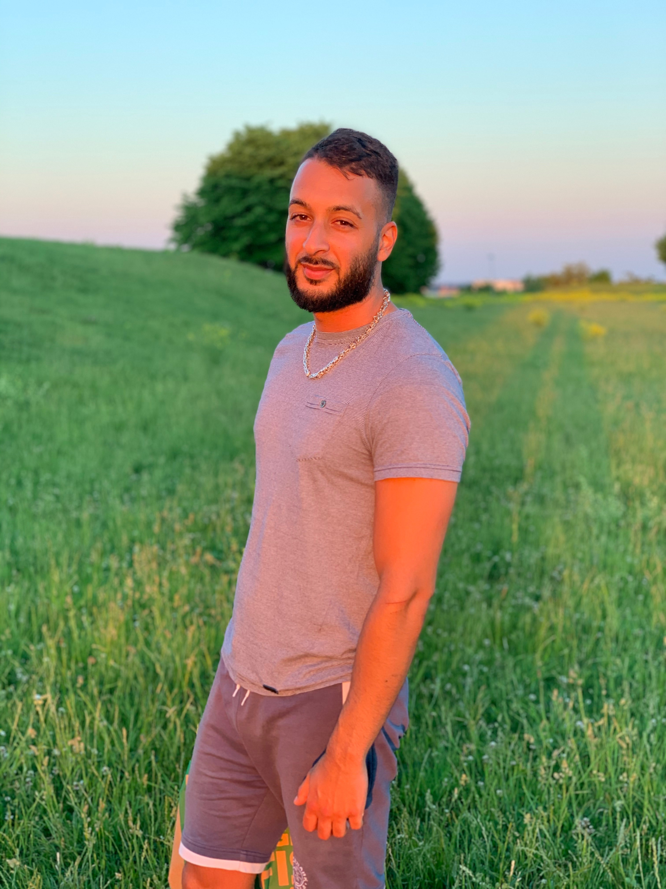
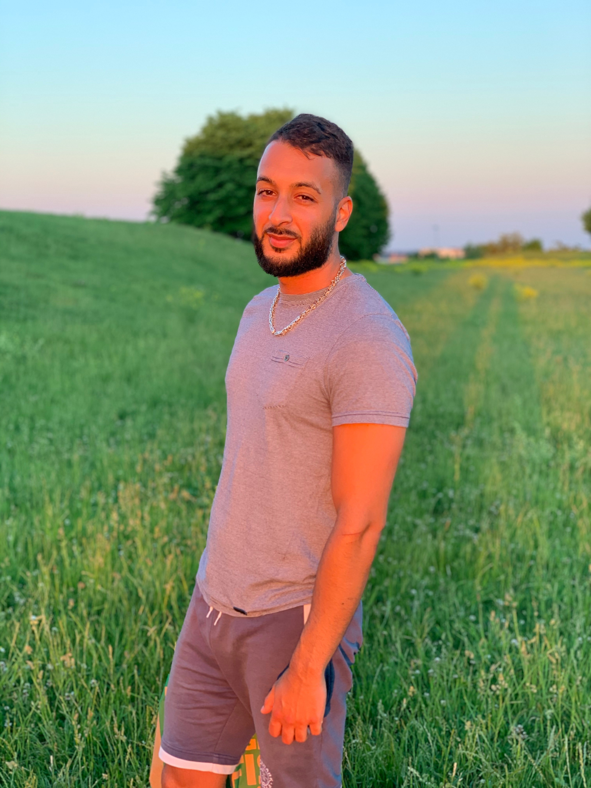

About Daniyal
Detta är Daniyals portfolio på saker han har åstadkommit
Komponerat hoppljudet till Super Mario Galaxy 2
Lyckats välja ut en aokado som inte varit övermogen eller undermogen 23 gånger på raken
Skapat en väldigt lyckad och viral meme som gått världen runt
Äger full dragonset armor och 3rd age longsword på Runescape
Varit huvudpersonen på en youtube video senaste månaden som fått över en kvarts miljon views (Han kommer aldrig säga vilken video det är).
Hoppas detta har väckt upp ert intresse för Daniyal och undrar ni någonting mer så kan ni alltid kontakta honom här 
Hoppas detta har väckt upp ert intresse för Daniyal och undrar ni någonting mer så kan ni alltid kontakta honom här 